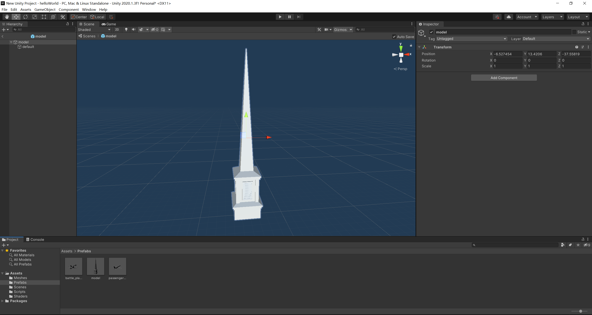
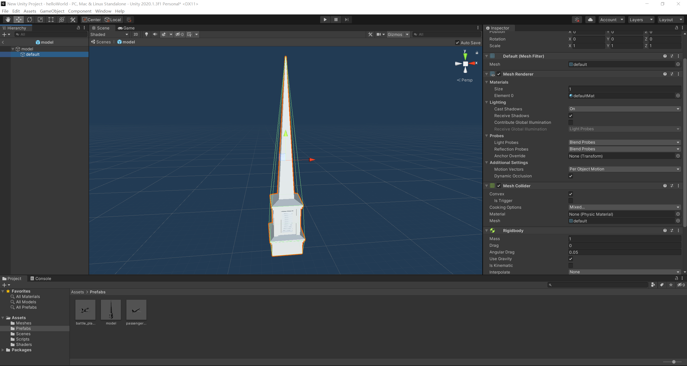
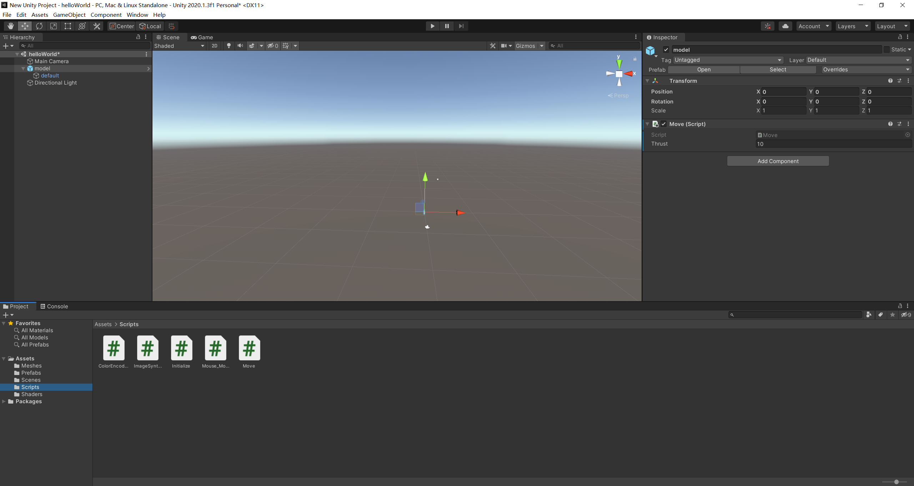
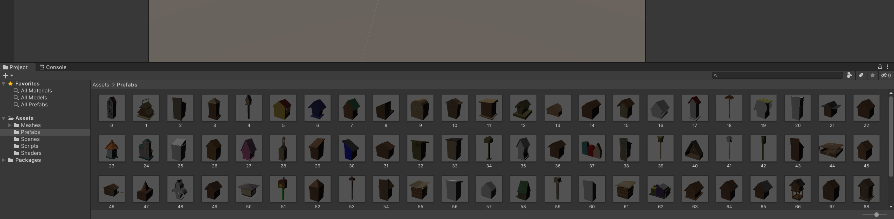
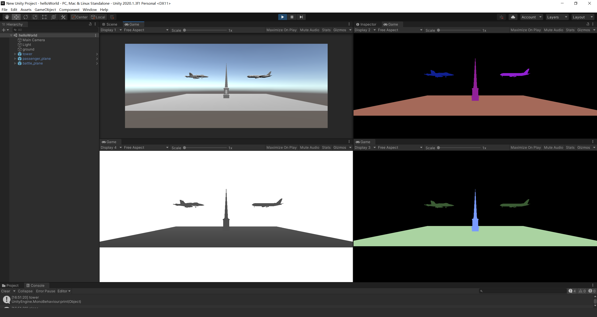

C Sharp玩unity系列2——刚体
项目源码
本项目的源码在文件夹Rigidbody_tutorial中，访问请找Haoyuan。
Prefab（预制件）的封装
在Unity中，Prefab是一个被经常使用的类型。一个外部资源（比如obj、fbx、dae文件）往往都要先被封装成Prefab（.prefab文件），然后才能load到Unity的Scene中。这一期教程中暂时还是使用Unity Editor，也就是GUI的方式定制Prefab。
我们以OBJ文件为例。首先要把想要使用的obj文件复制到Assets文件夹下，然后把它拖到Scene中，把Scene列表中的该对象拖回Assets列表里，在弹出的对话框中选择Original Prefab，这时Assets中会自动生成.prefab文件，同时Scene列表中的物体也会自动变为Prefab类型。区分一个物体是不是prefab很简单：从图标上面看，普通的GameObject是一个空心的立方体，而Prefab是蓝色实心的立方体。
Prefab定制好之后，我们可以预先对Prefab进行component的赋予，例如增加碰撞检测、增加刚体、柔体属性等等。我们建议使用以下方法对prefab进行设置。
- 在Unity Editor界面的Project窗口中，双击刚才生成好的prefab文件，即可进入Prefab编辑模式。注意，这一模式下你对于prefab的任何修改都是会直接保存到prefab本身的。

-
左侧的Hierarchy窗口可以看到本prefab的父子结构。我们接下来既可以对prefab本身继续修改，也可以对它的孩子（也就是我们的obj文件所对应的GameObject）进行修改，具体把属性加到谁上面更好，就是task-specific的了。
-
想要添加属性，就在inspector窗口的最下面的一个Add Component按钮即可操作。本期教程中只需加入刚体属性和碰撞检测。需要注意的是，碰撞检测如果选用mesh collider，一定要将convex属性勾选为true，这样才可以进行正常的碰撞检测。属性添加完毕后如图所示。（我加在了孩子上）

运动
封装好了prefab文件后，接下来的部分我们都可以使用代码的方式来获取和控制。对于刚体来说，我们一般初始化时给它生成到一个位置上，然后用力去控制它的运动。首先将prefab拖到scene中，随便放在一个位置就可以，因为我们后续还会用代码对它的位置进行调整。控制的script脚本Move.cs如下
using UnityEngine;
public class Move : MonoBehaviour
{
Rigidbody m_Rigidbody;
public float m_Thrust = 10f;
void Start()
{
m_Rigidbody = GetComponentInChildren<Rigidbody>();
// m_Rigidbody = GetComponent<Rigidbody>();
m_Rigidbody.transform.position = new Vector3(0, 0, 0);
m_Rigidbody.mass = 10;
m_Rigidbody.useGravity = false;
}
void FixedUpdate()
{
if (Input.GetKey("w"))
{
m_Rigidbody.AddForce(transform.up * m_Thrust);
}
}
}
然后在Unity的Hierarchy中点击这个prefab（我这里的例子，这个prefab的名字叫model），在右侧的inspector中add component，并把Move.cs添加上。需要注意的是，脚本的名字和脚本中所定义的类的名字一定要一致，否则在Unity中无法选中该脚本。例如我这里的类名叫Move，则脚本名称要叫Move.cs。

这里先简单梳理一下代码的逻辑。Start()函数是第一帧画面形成前所要执行的代码，也是所有类中一定会重新实现的虚函数。在这里我们首先绑定了成员变量m_Rigidbody和我们定义的刚体。由于前面我把刚体属性添加到了prefab的孩子上，因此这里使用的函数为
m_Rigidbody = GetComponentInChildren<Rigidbody>();
如果将刚体属性添加到prefab本身，则需要使用
m_Rigidbody = GetComponent<Rigidbody>();
当然，也可以将脚本绑定在prefab的孩子上，而且刚体属性添加到prefab的孩子上，这样也是使用GetComponent<Rigidbody>()函数。总而言之，这种绑定关系要和父子的层级关系相对应。
继续说代码，Start()函数中接下来的几行没什么特别的，都是字面意思。FixedUpdate()函数是按照固定时间间隔去执行的，与帧率（FPS）无关，因此物理设置一般都会在FixedUpdate()函数中去实现。
有关MonoBehaviour基类中Update()、FixedUpdate()、LateUpdate()等函数的区别，这里就先不展开了，具体可以去Unity Script API中查。
FixedUpdate()中，Input类是Unity API提供的一个外设输入类，可以接收键盘、鼠标、游戏手柄等的输入信号。我这里只使用了键盘的W键，向刚体中施加向上的力。
代码就先说到这。如果想要运行看效果，只需要点击最上方的三角形运行符号。运行起来后，Game窗口内显示的画面就是Main Camera所拍摄到的画面。我们也可以按W键看物体是否能运动起来。
碰撞
碰撞部分至少需要两个物体，因此我们按照之前的步骤再制作一个Prefab，然后在该prefab上再挂一个类似于Move.cs的脚本，但是控制方向的按键不要和Move.cs中相同，否则两个物体会同时被控制。
由于制作Prefab的时候已经加上了刚体属性和Mesh Collider，因此碰撞的基本要求已经实现，直接运行，然后控制两个物体撞到一起，就可以看出效果了。这里再次强调，Mesh Collider一定要勾选Convex选项；同时刚体属性的is Kinematic属性不要勾选，否则只能通过位置而不能通过力去控制它。
批量生成Prefab
前面所做的操作其实还是挺依赖GUI的，对我们来说，做刚体的仿真可能是够了（当然，刚体的各种参数需要进一步调整），但是如果想要批量生成Synthetic的数据，光靠这样一个一个的拖、加属性、加脚本、做prefab肯定不现实。但幸运的是，前面制作prefab的过程比较形式化，这就让批量生成prefab的脚本成为了可能。在此基础上，如果我们只在场景中放一个Main Camera，而且只在Main Camera上面绑定一个脚本，它可以随机地去load我们已经生成好的prefab，然后放到场景中去，再经过渲染，我们可以得到RGB、instance mask、depth、pose等等信息，那么synthetic的数据集就出来了。因此这个section中我们先来实现如何批量生成prefab，然后最后一个section中去实现如何获取渲染信息。
物体准备
我以ShapeNetCore.v1的02843684文件夹作为mesh资源，因为这个文件夹中包含的类都为bird house类，因此将02843684重命名为birdhouse，并整体放在Assets/Meshes/下，由于模型较大，因此并未包含在Rigidbody_tutorial中，如果需要请自行下载。
C#代码
代码的逻辑就是通过for循环，以代码的方式复现我们前面制作prefab的过程。整体代码参考Assets/Scripts/ProducePrefabs.cs，在此我们仅列出一些关键代码。
首先将Mesh导入到Unity中并转换为GameObject类。然后必须要执行Instantiate()函数，因为直接通过mesh转换而来的GameObject实例不是persistent的，无法直接进行保存。变量gameObject是预先定义好的，可以认为是一个工具变量。
GameObject go = AssetDatabase.LoadAssetAtPath(fullMeshName, typeof(UnityEngine.Object)) as GameObject;
gameObject = Instantiate(go);
模型load进来之后，我们需要对这个prefab进行一些预处理。对应于前面的操作，就是给这个prefab加上rigidbody属性和Meshcollider属性。这些属性既可以添加到prefab本身，也可以加在孩子上。在这里我们依然把它加在孩子上。这里有一个代码上的trick，因为我们知道孩子是mesh，因此一定会有属性MeshFilter。所以我们直接在孩子中找到MeshFilter这个属性，就可以定位到孩子上了。
MeshFilter mf = gameObject.GetComponentInChildren<MeshFilter>();
mf.gameObject.name = "all";
mf.gameObject.AddComponent<Rigidbody>();
mf.gameObject.AddComponent<MeshCollider>();
mf.gameObject.GetComponent<MeshCollider>().convex = true;
最后，利用PrefabUtility类进行保存即可。需要注意的是，每次保存后，AssetDatabase要进行刷新。最后一句Destroy()函数执行的意义是，因为我们每次都把导入的mesh赋给了gameObject这个变量，如果不destroy，所有的mesh都会被生成在场景中，再加上他们都是刚体且有碰撞检测，start()函数执行结束后会出现一个爆炸的效果，既烧CPU又烧显卡，因此干脆destroy掉，不让任何一个mesh显示在场景中。
PrefabUtility.SaveAsPrefabAsset(gameObject, fullPrefabName);
AssetDatabase.Refresh();
Destroy(gameObject);
最终生成的prefab如下图所示。

渲染
渲染的第一步是把物体load进来。因为我们都从prefab出发，所以可以统一操作。借助PrefabUtility类即可load一个指定路径的prefab，并把它强制转换为GameObject并返回。
GameObject CreatePrefabAtPath(string path)
{
GameObject gameObj = AssetDatabase.LoadAssetAtPath<GameObject>(path);
return PrefabUtility.InstantiatePrefab(gameObj) as GameObject;
}
Instance mask
在Unity的场景中，每一个GameObject类型的变量都会被赋予一个唯一的instance id，只需要把每个id映射为一个独一无二的颜色即可。这个id通过
GetInstanceID()
函数进行获取。最后再把这个color赋给MaterialPropertyBlock即可。
Category
一个GameObject类型的变量可以被赋予一个name，那么这个name正好可以用作类别信息，如果我们规定了我们所要生成的数据集总数量，则可以相应地规定一个调色板，定义每一个类的颜色，从而实现name到color的一一映射，再把这个color赋给MaterialPropertyBlock即可。
Depth
首先介绍一个renderer的概念。renderer是object-specific的，每一个需要渲染的物体就对应着一个唯一的renderer。 深度信息是renderer的一个内置变量，到时候把这个值统一交给shader去处理就可以了。所谓shader就是着色器，它是真正负责给物体渲染颜色的工具。只要我们想让图片出现非RGB的形式，就需要替换shader，并由shader来指定每一个像素是什么颜色。shader是camera-specific的，每一个相机需要去指定一个shader（默认的就是RGB的shader）。
具体shader的写法我这里就不详细展开了，因为渲染部分的shader代码也不是我自己写的，而是别人写好的（也有可能是Unity官方写好的）一个通用的、用于渲染synthetic数据集的shader文件。
Camera设定
以上信息都可以获取了之后，我们就可以开始生成了。需要注意的是，因为我们需要同时获取多种信息（RGB, Instance mask，semantic mask等），因此需要多个摄像机。除了脚本要绑定的Main Camera（用于获取RGB）外，还要额外生成其他的几个相机用于获取其他信息。这些相机的位置必须要保持一致，因此一个trick就是让所有其他相机的transform都是Main Camera的transform的孩子，并保证所有相机的local transform都是恒变换，即可保证所有相机的transform一致。
